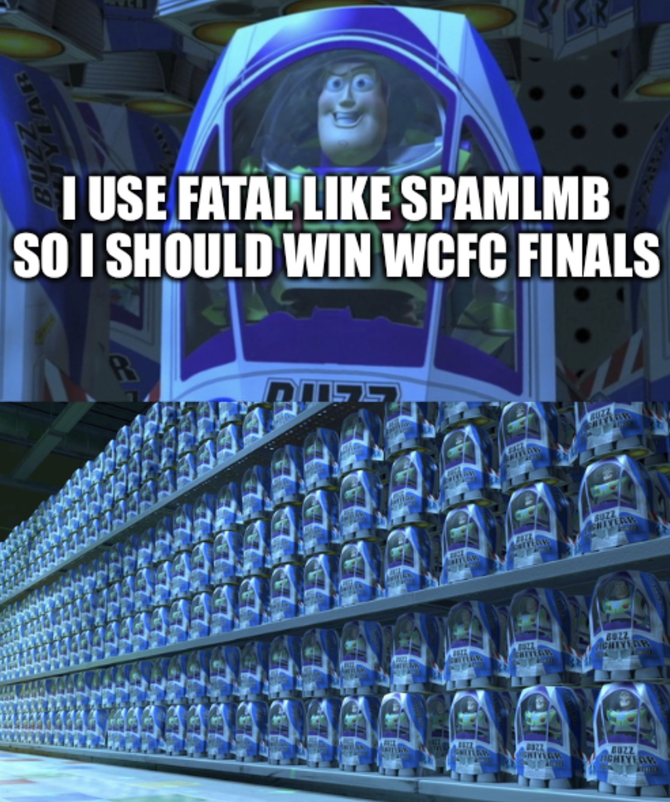

WynnCraft FightClub Season 2 Recap

Season 2 started out well with the banning of Combat Warp, forcing many players to explore a new meta. The so-called “Walmart Combat Warp” began emerging as a viable build replacing Warp with the slightly less-effective Fatal.
For 13 weeks, SpamLMB was undefeated as the previous WCFC Champion, and with his trademark Fatal build, it seemed like there was going to be a repeat of Season 1.
With Combat Warp out of the way, and heal potions banned, mage became the dominant PVP class one way or another.
Many other competitors stood their ground, however, against the growing meta. Namely, DogeTennant and IAmARatYes, who stuck with their Shaman and Assassin builds respectively until the very end, showing a masterful skill of PVP to compete with the far more overpowered mages.
Amidst the season, some controversy did arise, however. Biblonko and Ugastag Da Llamma, WCFC Gladiators since day 1 of season 2, were caught precharging their courage powder abilities prior to fights.
In their defense, they were unaware of their wrongdoing, and thus were not punished severely. All fights involving those powder abilities were rematched to maintain fairness.
Enter: Triflame.
One of the top PVPers on the WynnCraft hunting scene, Triflame had a rocky start to WCFC, going 0-4 in his first few matches. However, once he determined the meta, he captilized on it FAST, rising from the bottom of the leaderboards to 6th place in just a few weeks.
Also worth mentioning is Leafish, who’s performance, although not deviating from the meta, showed a mastery of PVP skill with Walmart Combat Warp, as he was one of the only people to ever defeat SpamLMB in a Season 2 match.
Your top 10 Qualifying competitors in Season 2 are as follows:
1. SpamLMB
2. JerryStuffRo
3. Leafish
4. Rabaluda
5. BadNewsBears
6. Tripflame
7. MrTopper
8. Ugastag
9. DogeTennant
10. Biblonko
In the first elimination round of finals, MrTopper and Rabaluda were eliminated.
Following Eliminations, the quarterfinals came down to Triflame (6), SpamLMB (1), Leafish (3), and JerryStuffRo (2)
In a walloping defeat, JerryStuffRo, rank #2 was knocked out by the #6 seed, Triflame, who up until this point, had been fighting with only Bear Mask.
In perhaps the most massive upset in history, Leafish defeated SpamLMB in the Morph-Off rounds of their Best-of-Three match.
In the final match, it was first to three wins. Triflame won the first 2 rounds, in a resounding victory. But out of nowhere, Leafish won the following 2 rounds, and tying the last. With nothing else to do, the referees declared a Morph-Off, which once again landed in a tie.
In a final decision, the Referees chose for the competitors to Morph-Off in non-mage classes of their choosing. Triflame, opting to run an archer, finally defeated the resilient Leafish after 7 consecutive fights spanning 20min total.
In the end, Triflame emerged victorious, and the legend of the Bear Mask lives on… but that is a story for another time.
ARCHIVE LINKS:
WCFC SEASON 2 FINALSWCFC WEEKS 16 and 17
WCFC WEEKS 14 and 15
WCFC WEEKS 12 and 13
WCFC WEEK 11
WCFC WEEK 10